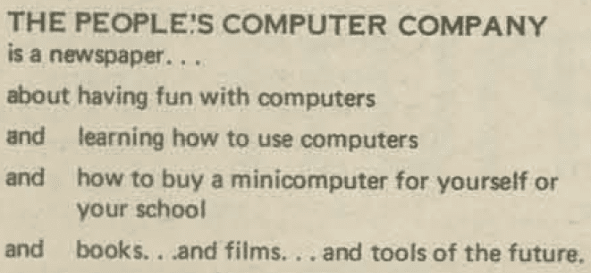
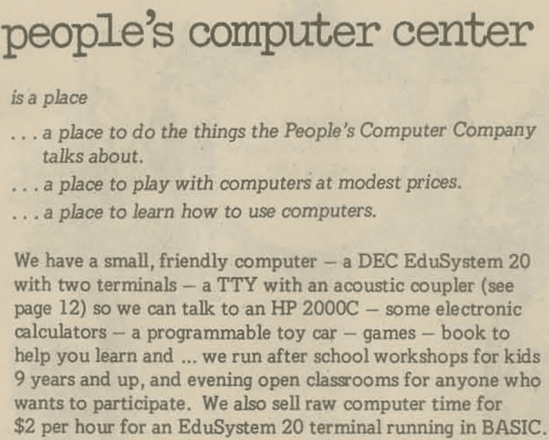
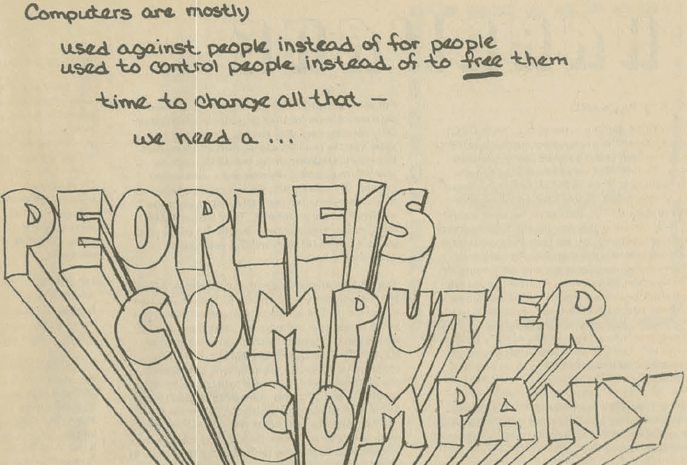

PCC and People's Computing
Following on from the medicine shows and Portola, let's talk about the People's Computer Company and, by necessity, the accompanying People's Computer Company newsletter, founded in October 1972 by Albrecht. There is a distinction, and Albrecht gives us some ideas from Jon Cappetta's interview with Bob Albrecht in 2015 (PDF version).
So that was the beginning of PCC, the newspaper, the periodical. Then Dennis [Allison] and I, LeRoy, and some others decided to start a non-profit corporation called People's Computer Company. Now we had PCC the periodical, and PCC the non-profit educational corporation.
Bob Albrecht worked with LeRoy Finkel to create a new periodical within the context of their DYMAX group. They called the group that produced this periodical the People's Computer Company. This name was apparently in the same spirit as "Big Brother and the Holding Company'' which was a popular band that formed in San Francisco in 1965. They were most certainly not a company. The "holding" part was a bit of a pun regarding the possession of illegal drugs.
Let's consider how the newsletter branded itself in the latter part of 1972.


Throughout the newsletters, you will see mention of the EduSystem, as in the image above. The EduSystems were "educational computer systems" made by the Digital Equipment Corporation (DEC). Engineers built these systems around the PDP-8 and PDP-11 minicomputers. You would see references in the literature to Edu 5, Edu 10, Edu 20, and so forth.
Edu 25, for example, was a time-sharing system that allowed up to eight users, all using BASIC. The Edu 25 was an Edu 20 with sixteen kilobyte words of memory and two "DECtapes." DECtapes were magnetic tapes on five-inch reels, each of which could store up to 188,672 words. The December issue of the PCC newsletter had an article called "Terminal Terminology" that provided some excellent context.
From that second image above, one very relevant point to understand is that the People's Computer Center eventually was a physical space, and it was open enough that its audience ran from young children up to adults. Games in the center could be targeted at one, neither, or both. But most of those games were, in fact, in BASIC. Specifically, going back to the interview, Albrecht tells us a bit about the late 1972 or early 1973 time frame.
The California math counsel conference was held at a Asilomar [type of hotel] every year and Asilomar has all these wonderful little buildings. They put us in a little octogonal building and we just ran open workshops all day. If the conference doors were open we were open.
This conference was the forerunner of what would come only a little later, which was a dedicated space for these kinds of activities. That space was called the Community Computer Center. Albrecht provides some context for that in the interview.
We rented the space next door [to DYMAX]. ... PCC, the periodical, was produced by PCC, the non-profit corporation, and Community Computer Center set up its very own non-profit corporation that remained on Doyle St.
Also worth considering is a descriptive blurb for the PCC.

There are some noticeable tonal differences between the self-descriptions.
An important context is that, at the time, the only feasible way to use a computer was to be associated with a large institution like a university or have the good fortune to attend a K-12 school with access. Notice how the EduSystem context was a "minicomputer." Personal computers weren't an option yet as none existed until 1975. That said, we do have to make allowances for what "personal computer" meant, distinguishing from one you could have at home versus one you could use "personally" in a classroom or other setting.
Albrecht's focus on BASIC was front-and-center here as the first issue of the PCC newsletter indicates.
If you want to talk to computers, you got to learn a language. There are lots of languages for talking to computers. Most of them are O.K. for computer freaks but lousy for people. We will use the computer language called BASIC - great for people, not so good for computer freaks.
An article in the December 1972 newsletter that discusses problems with BASIC is potentially interesting. This article is titled "Tilting at Windmills, Or What's Wrong with BASIC?" and an interesting part of that article is the following:
For you FORTRAN, APL and COBOL fanatics who are upset at our s-t-r-o-n-g stand for BASIC, we owe you an explanation. We deal primarily with school age kids and prefer BASIC for any and all of these reason ...
Then, the article lists many reasons that serve as the explanation that Albrecht mentions. The article also reminds people of the focus.
Keep in mind our target - KIDS - kids ages 8 to 18 in a problem-solving, simulation and gaming environment.